In memoriam
Een lege plek, een groot gemis,
een mooie herinnering is al wat er nog van jou is.
Jou te kennen vond ik fijn,
je los te laten, dat doet pijn...
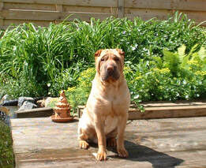
Murphy
hond van Bart
° 27/09/1998
† 21/06/2009
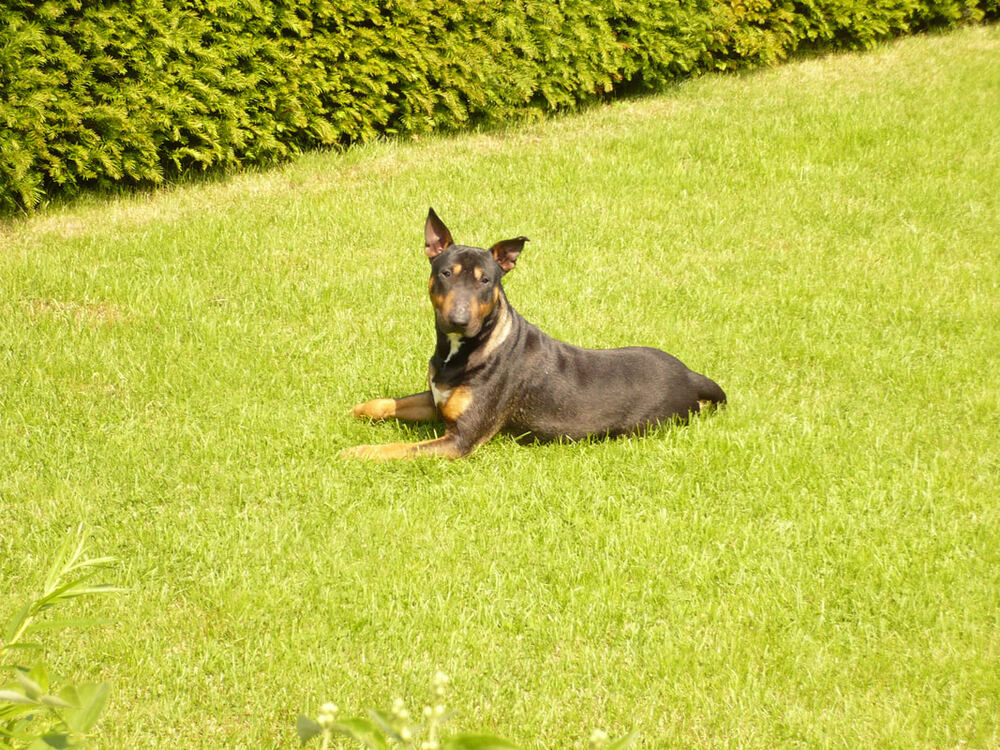
Joep
hond van Katrien en Sven
° 21/04/2006
† 20/06/2009
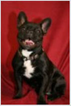
Pebbles
hond van Barbara Minoodt
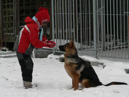
Ishta
hond van Machteld, Didier, Jorn en Lotte
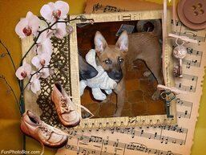
Laura
hond van Bernard
† 22/01/2011
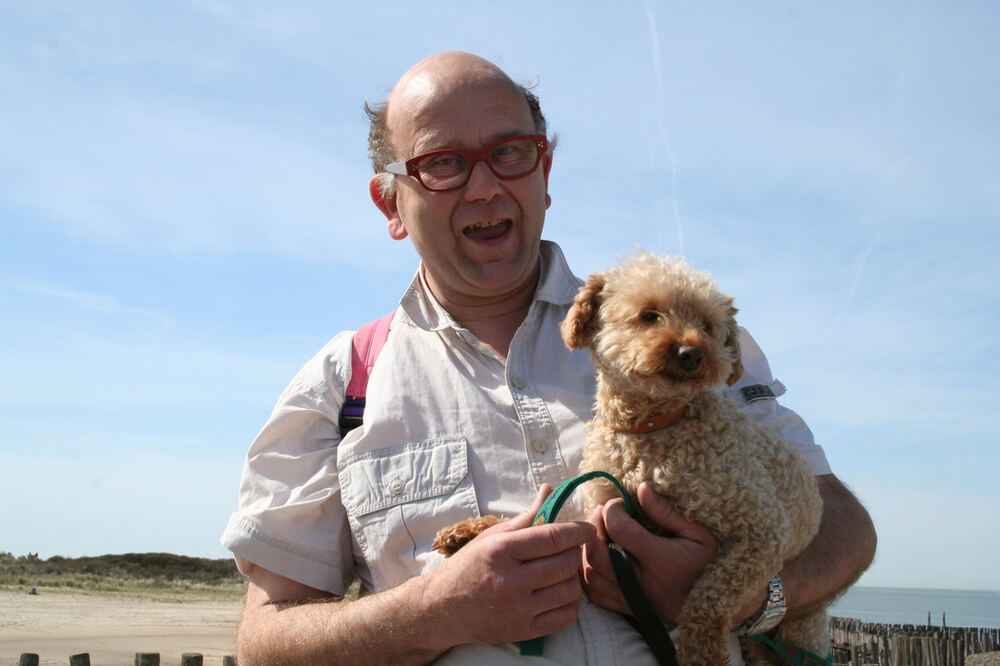
Snoopy
hond van Willy
† 01/06/2011
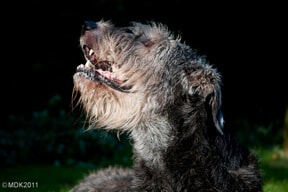
Odin
hond van Milène
† 16/12/2013
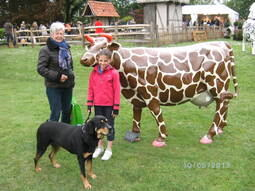
Jes
hond van Greta
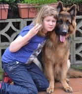
Rex
hond van Natalie, Patrick, Stefanie en Femke
° 17/12/2012
† 08/12/2014
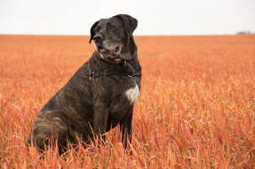
Moone
hond van Vincent
geadopteerd op 13/07/2007
† 21/05/2015
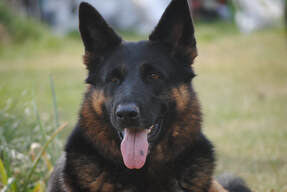
Yoda
hond van Christel
° 4/02/2004
† 6/10/2014
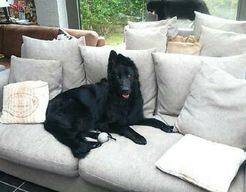
Ziva
hond van Christel
° 10/09/2014
† 02/06/2015
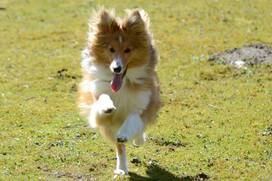
Najanga
hond van Wendy en Johan
° 18/08/2014
† 28/02/2016
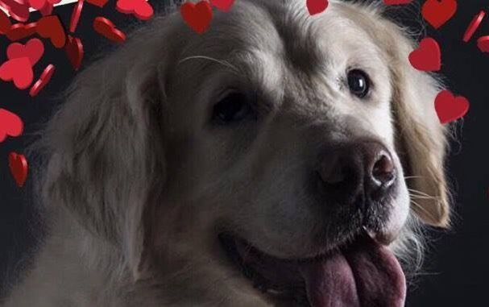
Bingo
hond van Maggelien en Wouter
° 01/03/2008
† 25/05/2016
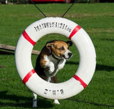
Sam
hond van Diane
° 7/12/2006
† 08/2016
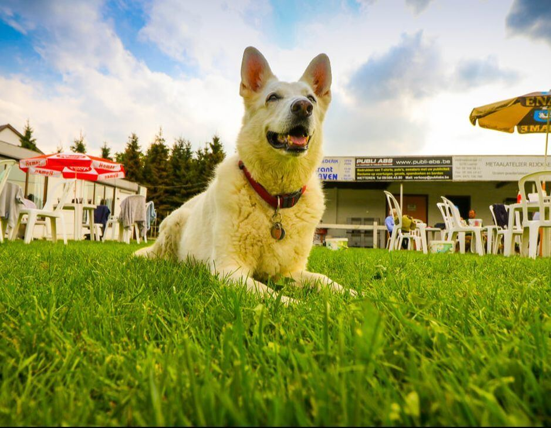
Chiva
hond van Cindy
° 25/12/2003
† 14/11/2016
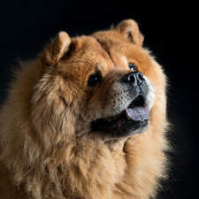
Kyra
hond van Jelle en Carine
° 15/08/2004
† 27/01/2017
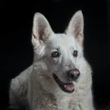
Magick
hond van Ode en Jean-Paul
° 25/12/2003
† 29/12/2017
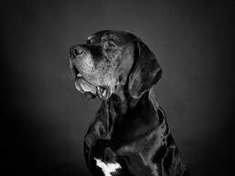
Pablo
hond van Vincent
geadopteerd op 02/08/2013
† 26/02/2018
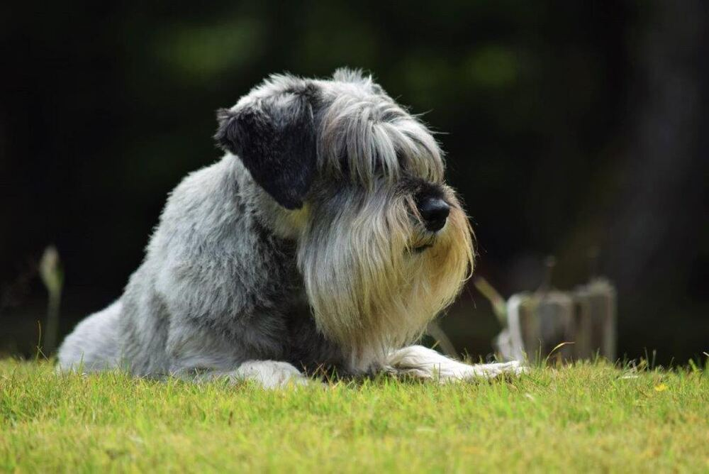
Efra
hond van Linda en Dirk
° 25/12/2005
† 26/07/2018